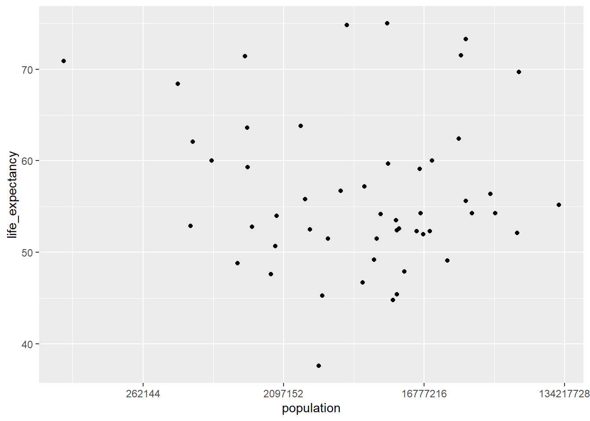
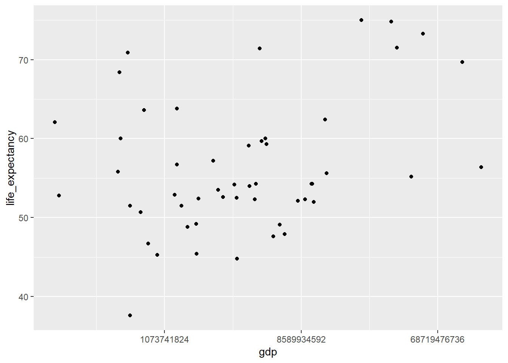
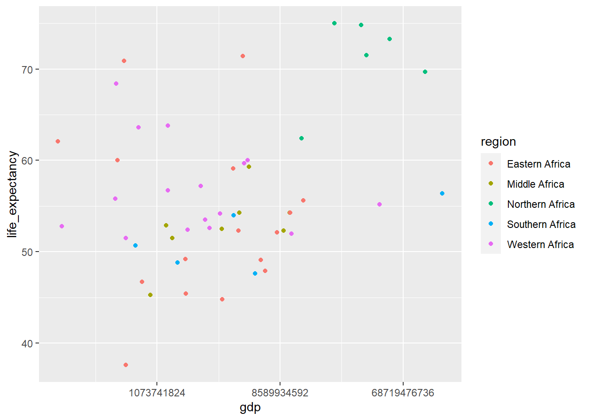
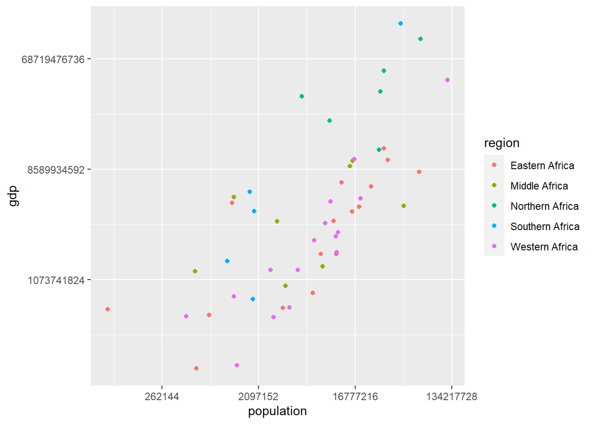
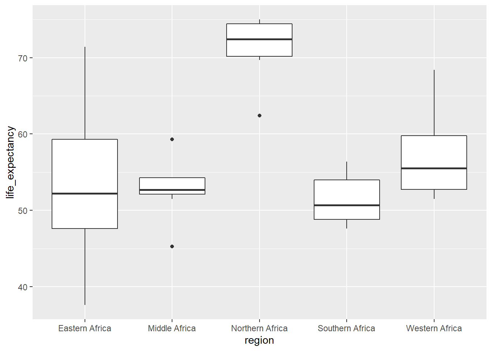

R coding Exercise
library(dslabs) #contains gapminder## Warning: package 'dslabs' was built under R version 4.1.1library(tidyverse)
library(broom)#Explore gapminder
##################
help(gapminder) #pull up the help page for gapminder
str(gapminder) #overview of data structure## 'data.frame': 10545 obs. of 9 variables:
## $ country : Factor w/ 185 levels "Albania","Algeria",..: 1 2 3 4 5 6 7 8 9 10 ...
## $ year : int 1960 1960 1960 1960 1960 1960 1960 1960 1960 1960 ...
## $ infant_mortality: num 115.4 148.2 208 NA 59.9 ...
## $ life_expectancy : num 62.9 47.5 36 63 65.4 ...
## $ fertility : num 6.19 7.65 7.32 4.43 3.11 4.55 4.82 3.45 2.7 5.57 ...
## $ population : num 1636054 11124892 5270844 54681 20619075 ...
## $ gdp : num NA 1.38e+10 NA NA 1.08e+11 ...
## $ continent : Factor w/ 5 levels "Africa","Americas",..: 4 1 1 2 2 3 2 5 4 3 ...
## $ region : Factor w/ 22 levels "Australia and New Zealand",..: 19 11 10 2 15 21 2 1 22 21 ...summary(gapminder) #summary of data## country year infant_mortality life_expectancy
## Albania : 57 Min. :1960 Min. : 1.50 Min. :13.20
## Algeria : 57 1st Qu.:1974 1st Qu.: 16.00 1st Qu.:57.50
## Angola : 57 Median :1988 Median : 41.50 Median :67.54
## Antigua and Barbuda: 57 Mean :1988 Mean : 55.31 Mean :64.81
## Argentina : 57 3rd Qu.:2002 3rd Qu.: 85.10 3rd Qu.:73.00
## Armenia : 57 Max. :2016 Max. :276.90 Max. :83.90
## (Other) :10203 NA's :1453
## fertility population gdp continent
## Min. :0.840 Min. :3.124e+04 Min. :4.040e+07 Africa :2907
## 1st Qu.:2.200 1st Qu.:1.333e+06 1st Qu.:1.846e+09 Americas:2052
## Median :3.750 Median :5.009e+06 Median :7.794e+09 Asia :2679
## Mean :4.084 Mean :2.701e+07 Mean :1.480e+11 Europe :2223
## 3rd Qu.:6.000 3rd Qu.:1.523e+07 3rd Qu.:5.540e+10 Oceania : 684
## Max. :9.220 Max. :1.376e+09 Max. :1.174e+13
## NA's :187 NA's :185 NA's :2972
## region
## Western Asia :1026
## Eastern Africa : 912
## Western Africa : 912
## Caribbean : 741
## South America : 684
## Southern Europe: 684
## (Other) :5586class(gapminder) #type of object = data.frame## [1] "data.frame"#Create subset "africadata" for African countries: check structure and summary
africadata <- gapminder %>%
filter(continent == "Africa")
str(africadata) ## 'data.frame': 2907 obs. of 9 variables:
## $ country : Factor w/ 185 levels "Albania","Algeria",..: 2 3 18 22 26 27 29 31 32 33 ...
## $ year : int 1960 1960 1960 1960 1960 1960 1960 1960 1960 1960 ...
## $ infant_mortality: num 148 208 187 116 161 ...
## $ life_expectancy : num 47.5 36 38.3 50.3 35.2 ...
## $ fertility : num 7.65 7.32 6.28 6.62 6.29 6.95 5.65 6.89 5.84 6.25 ...
## $ population : num 11124892 5270844 2431620 524029 4829291 ...
## $ gdp : num 1.38e+10 NA 6.22e+08 1.24e+08 5.97e+08 ...
## $ continent : Factor w/ 5 levels "Africa","Americas",..: 1 1 1 1 1 1 1 1 1 1 ...
## $ region : Factor w/ 22 levels "Australia and New Zealand",..: 11 10 20 17 20 5 10 20 10 10 ...summary(africadata) ## country year infant_mortality life_expectancy
## Algeria : 57 Min. :1960 Min. : 11.40 Min. :13.20
## Angola : 57 1st Qu.:1974 1st Qu.: 62.20 1st Qu.:48.23
## Benin : 57 Median :1988 Median : 93.40 Median :53.98
## Botswana : 57 Mean :1988 Mean : 95.12 Mean :54.38
## Burkina Faso: 57 3rd Qu.:2002 3rd Qu.:124.70 3rd Qu.:60.10
## Burundi : 57 Max. :2016 Max. :237.40 Max. :77.60
## (Other) :2565 NA's :226
## fertility population gdp continent
## Min. :1.500 Min. : 41538 Min. :4.659e+07 Africa :2907
## 1st Qu.:5.160 1st Qu.: 1605232 1st Qu.:8.373e+08 Americas: 0
## Median :6.160 Median : 5570982 Median :2.448e+09 Asia : 0
## Mean :5.851 Mean : 12235961 Mean :9.346e+09 Europe : 0
## 3rd Qu.:6.860 3rd Qu.: 13888152 3rd Qu.:6.552e+09 Oceania : 0
## Max. :8.450 Max. :182201962 Max. :1.935e+11
## NA's :51 NA's :51 NA's :637
## region
## Eastern Africa :912
## Western Africa :912
## Middle Africa :456
## Northern Africa :342
## Southern Africa :285
## Australia and New Zealand: 0
## (Other) : 0#Create 2 new subsets
#Containing only infant_mortality and life_expectancy
infant_mor <- africadata %>%
select(c(infant_mortality, life_expectancy))
#Containing only population and life_expectancy
pop <- africadata %>%
select(c(population, life_expectancy))#check structure and summary of 2 new subsets
str(infant_mor)## 'data.frame': 2907 obs. of 2 variables:
## $ infant_mortality: num 148 208 187 116 161 ...
## $ life_expectancy : num 47.5 36 38.3 50.3 35.2 ...summary(infant_mor)## infant_mortality life_expectancy
## Min. : 11.40 Min. :13.20
## 1st Qu.: 62.20 1st Qu.:48.23
## Median : 93.40 Median :53.98
## Mean : 95.12 Mean :54.38
## 3rd Qu.:124.70 3rd Qu.:60.10
## Max. :237.40 Max. :77.60
## NA's :226str(pop)## 'data.frame': 2907 obs. of 2 variables:
## $ population : num 11124892 5270844 2431620 524029 4829291 ...
## $ life_expectancy: num 47.5 36 38.3 50.3 35.2 ...summary(pop)## population life_expectancy
## Min. : 41538 Min. :13.20
## 1st Qu.: 1605232 1st Qu.:48.23
## Median : 5570982 Median :53.98
## Mean : 12235961 Mean :54.38
## 3rd Qu.: 13888152 3rd Qu.:60.10
## Max. :182201962 Max. :77.60
## NA's :51#Plot life expectancy as a function of infant mortality and as a function of population size.
#Make two separate plots.
#Plot the data as points.
#For the plot with population size on the x-axis, set the x-axis to a log scale.
ggplot(infant_mor, aes(x= infant_mortality, y = life_expectancy)) +
geom_point() #negative correlation## Warning: Removed 226 rows containing missing values (geom_point).
ggplot(pop, aes(x= population, y=life_expectancy)) +
geom_point() +
scale_x_continuous(trans='log2') #positive correlation and streaks of data## Warning: Removed 51 rows containing missing values (geom_point).
#Which years having missing infant_mortality data?
missing <- africadata %>%
select(infant_mortality, year) %>%
group_by(year) %>%
summarize(count = sum(is.na(infant_mortality)))
view(missing) #1960-1981 and 2016 have missing infant mortality data#Subset africadata by year = 2000
year2000 <- africadata %>%
filter(year == 2000)
str(year2000) #51 obs, 9 variables## 'data.frame': 51 obs. of 9 variables:
## $ country : Factor w/ 185 levels "Albania","Algeria",..: 2 3 18 22 26 27 29 31 32 33 ...
## $ year : int 2000 2000 2000 2000 2000 2000 2000 2000 2000 2000 ...
## $ infant_mortality: num 33.9 128.3 89.3 52.4 96.2 ...
## $ life_expectancy : num 73.3 52.3 57.2 47.6 52.6 46.7 54.3 68.4 45.3 51.5 ...
## $ fertility : num 2.51 6.84 5.98 3.41 6.59 7.06 5.62 3.7 5.45 7.35 ...
## $ population : num 31183658 15058638 6949366 1736579 11607944 ...
## $ gdp : num 5.48e+10 9.13e+09 2.25e+09 5.63e+09 2.61e+09 ...
## $ continent : Factor w/ 5 levels "Africa","Americas",..: 1 1 1 1 1 1 1 1 1 1 ...
## $ region : Factor w/ 22 levels "Australia and New Zealand",..: 11 10 20 17 20 5 10 20 10 10 ...summary(year2000)## country year infant_mortality life_expectancy
## Algeria : 1 Min. :2000 Min. : 12.30 Min. :37.60
## Angola : 1 1st Qu.:2000 1st Qu.: 60.80 1st Qu.:51.75
## Benin : 1 Median :2000 Median : 80.30 Median :54.30
## Botswana : 1 Mean :2000 Mean : 78.93 Mean :56.36
## Burkina Faso: 1 3rd Qu.:2000 3rd Qu.:103.30 3rd Qu.:60.00
## Burundi : 1 Max. :2000 Max. :143.30 Max. :75.00
## (Other) :45
## fertility population gdp continent
## Min. :1.990 Min. : 81154 Min. :2.019e+08 Africa :51
## 1st Qu.:4.150 1st Qu.: 2304687 1st Qu.:1.274e+09 Americas: 0
## Median :5.550 Median : 8799165 Median :3.238e+09 Asia : 0
## Mean :5.156 Mean : 15659800 Mean :1.155e+10 Europe : 0
## 3rd Qu.:5.960 3rd Qu.: 17391242 3rd Qu.:8.654e+09 Oceania : 0
## Max. :7.730 Max. :122876723 Max. :1.329e+11
##
## region
## Eastern Africa :16
## Western Africa :16
## Middle Africa : 8
## Northern Africa : 6
## Southern Africa : 5
## Australia and New Zealand: 0
## (Other) : 0#Same plots as before for year2000
ggplot(year2000, aes(x= infant_mortality, y = life_expectancy)) +
geom_point() #still negative correlation
ggplot(year2000, aes(x= population, y=life_expectancy)) +
geom_point() +
scale_x_continuous(trans='log2') #no noticable correlation
#For 2000 subset, fit two linear models
fit1 = lm(life_expectancy~infant_mortality, data = year2000) #y~x (predictor = infant_mortality)
fit2 = lm(life_expectancy~population, data = year2000) #y~x (predictor = population)
summary(fit1) #Life expectancy decreases by -0.19 years per additional 1 infant death per 1000 persons. This relationship is statistically significant (p-value = 2.83E-8).##
## Call:
## lm(formula = life_expectancy ~ infant_mortality, data = year2000)
##
## Residuals:
## Min 1Q Median 3Q Max
## -22.6651 -3.7087 0.9914 4.0408 8.6817
##
## Coefficients:
## Estimate Std. Error t value Pr(>|t|)
## (Intercept) 71.29331 2.42611 29.386 < 2e-16 ***
## infant_mortality -0.18916 0.02869 -6.594 2.83e-08 ***
## ---
## Signif. codes: 0 '***' 0.001 '**' 0.01 '*' 0.05 '.' 0.1 ' ' 1
##
## Residual standard error: 6.221 on 49 degrees of freedom
## Multiple R-squared: 0.4701, Adjusted R-squared: 0.4593
## F-statistic: 43.48 on 1 and 49 DF, p-value: 2.826e-08summary(fit2) #Life expenctancy increase by 2.76E-8 years per additional 1 person in the population. However, this relationship is not statistically significant (p-value = 0.616).##
## Call:
## lm(formula = life_expectancy ~ population, data = year2000)
##
## Residuals:
## Min 1Q Median 3Q Max
## -18.429 -4.602 -2.568 3.800 18.802
##
## Coefficients:
## Estimate Std. Error t value Pr(>|t|)
## (Intercept) 5.593e+01 1.468e+00 38.097 <2e-16 ***
## population 2.756e-08 5.459e-08 0.505 0.616
## ---
## Signif. codes: 0 '***' 0.001 '**' 0.01 '*' 0.05 '.' 0.1 ' ' 1
##
## Residual standard error: 8.524 on 49 degrees of freedom
## Multiple R-squared: 0.005176, Adjusted R-squared: -0.01513
## F-statistic: 0.2549 on 1 and 49 DF, p-value: 0.6159#Additional analyses by Minaz Mawani - checking the relationship between life expectancy and other variables in the dataset
ggplot(year2000, aes(x= gdp, y = life_expectancy)) +
geom_point() +
scale_x_continuous(trans='log2')
#checking relationship between GDP and life expectancy, region wise, shows somewhat linear pattern
ggplot(year2000, aes(x= gdp, y = life_expectancy, color = region)) +
geom_point() +
scale_x_continuous(trans='log2')
#checking relationship between gdp and population - nice linear relationship showing positive correlation between size of population and GDP
ggplot(year2000, aes(x= population, y = gdp, color = region)) +
geom_point() +
scale_y_continuous(trans='log2') +
scale_x_continuous(trans= 'log2')
#checking relationship between region and life expectancy, Northern Africa has the highest compared to Southern Africa having lowest life expectancy
ggplot(year2000, aes(x= region, y = life_expectancy)) +
geom_boxplot() 
#region as a factor variable
year2000$region.f <- factor(year2000$region)
is.factor(year2000$region.f)## [1] TRUE#Fitting two more linear models while adjusting for gdp and regio vs. region alone.
fit3 = lm(life_expectancy~ infant_mortality + gdp + region , data = year2000)
summary(fit3)# a unit increase in infant mortality would lead to a decrease of 0.173 years in life expectancy while adjusting for gdp and region. the model is statistically significant and explains 68% of the variability in the outcome.##
## Call:
## lm(formula = life_expectancy ~ infant_mortality + gdp + region,
## data = year2000)
##
## Residuals:
## Min 1Q Median 3Q Max
## -19.0799 -2.7576 0.6912 2.0482 7.9333
##
## Coefficients:
## Estimate Std. Error t value Pr(>|t|)
## (Intercept) 6.681e+01 2.393e+00 27.917 < 2e-16 ***
## infant_mortality -1.739e-01 2.716e-02 -6.403 8.62e-08 ***
## gdp 2.056e-11 3.311e-11 0.621 0.537870
## regionMiddle Africa 2.944e+00 2.138e+00 1.377 0.175440
## regionNorthern Africa 1.013e+01 2.781e+00 3.643 0.000708 ***
## regionSouthern Africa -4.635e+00 2.578e+00 -1.798 0.079088 .
## regionWestern Africa 5.887e+00 1.731e+00 3.401 0.001438 **
## ---
## Signif. codes: 0 '***' 0.001 '**' 0.01 '*' 0.05 '.' 0.1 ' ' 1
##
## Residual standard error: 4.743 on 44 degrees of freedom
## Multiple R-squared: 0.7235, Adjusted R-squared: 0.6858
## F-statistic: 19.19 on 6 and 44 DF, p-value: 7.808e-11fit4 = lm(life_expectancy~ infant_mortality + region , data = year2000)
summary(fit4) #a unit increase in infant mortality would lead to a decrease of 0.174 years in life expectancy while adjusting for region. the model is statistically significant and explains 69% of the variability in the outcome.##
## Call:
## lm(formula = life_expectancy ~ infant_mortality + region, data = year2000)
##
## Residuals:
## Min 1Q Median 3Q Max
## -19.1675 -2.4682 0.6053 2.2362 7.8495
##
## Coefficients:
## Estimate Std. Error t value Pr(>|t|)
## (Intercept) 66.95785 2.36426 28.321 < 2e-16 ***
## infant_mortality -0.17479 0.02694 -6.488 5.87e-08 ***
## regionMiddle Africa 2.96949 2.12310 1.399 0.16877
## regionNorthern Africa 10.89992 2.47117 4.411 6.35e-05 ***
## regionSouthern Africa -4.13489 2.43244 -1.700 0.09605 .
## regionWestern Africa 5.92329 1.71809 3.448 0.00124 **
## ---
## Signif. codes: 0 '***' 0.001 '**' 0.01 '*' 0.05 '.' 0.1 ' ' 1
##
## Residual standard error: 4.71 on 45 degrees of freedom
## Multiple R-squared: 0.721, Adjusted R-squared: 0.6901
## F-statistic: 23.26 on 5 and 45 DF, p-value: 1.828e-11#using broom and tidy function to convert the output in a presentable form
tidy(fit4)## # A tibble: 6 x 5
## term estimate std.error statistic p.value
## <chr> <dbl> <dbl> <dbl> <dbl>
## 1 (Intercept) 67.0 2.36 28.3 2.53e-30
## 2 infant_mortality -0.175 0.0269 -6.49 5.87e- 8
## 3 regionMiddle Africa 2.97 2.12 1.40 1.69e- 1
## 4 regionNorthern Africa 10.9 2.47 4.41 6.35e- 5
## 5 regionSouthern Africa -4.13 2.43 -1.70 9.61e- 2
## 6 regionWestern Africa 5.92 1.72 3.45 1.24e- 3